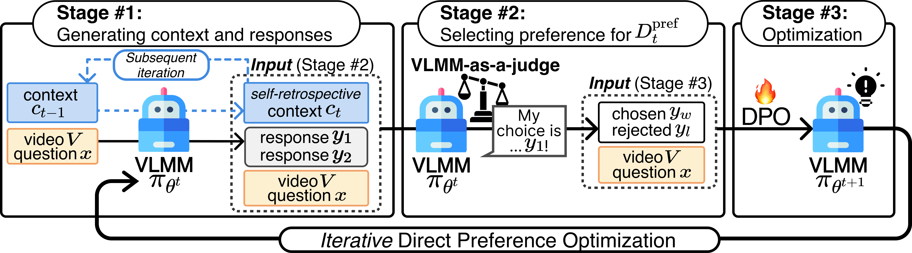
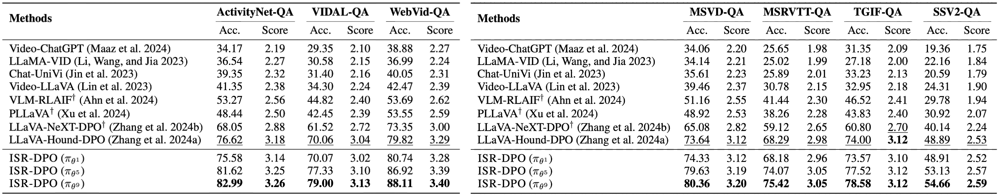

Iterative self-improvement, a concept extending beyond personal growth, has found powerful applications in machine learning, particularly in transforming weak models into strong ones. While recent advances in natural language processing have shown its efficacy through iterative preference optimization, applying this approach to Video Large Multi-modal Models (VLMMs) remains challenging due to modality misalignment. VLMMs struggle with this misalignment during iterative preference modeling, as the self-judge model often prioritizes linguistic knowledge over visual information. Additionally, iterative preference optimization can lead to visually hallucinated verbose responses due to length bias within the self-rewarding cycle. To address these issues, we propose Iterative Self-Retrospective Direct Preference Optimization (ISR-DPO), a method that uses self-retrospection to enhance preference modeling. This approach enhances the self-judge's focus on informative video regions, resulting in more visually grounded preferences. In extensive empirical evaluations across diverse video question answering benchmarks, the ISR-DPO significantly outperforms the state of the art. We are committed to open-sourcing our code, models, and datasets to encourage further investigation.

A key aspect of iterative DPO is that the VLMM acts as a judge to select the most appropriate response to a given question. To enhance this process, the VLMM utilizes detailed visual descriptions as visual context, which it generates itself alongside the video content for improved clarity.
Inspired by human learning processes, we incorporate a self-retrospective mechanism, where previously generated visual context is leveraged to produce better context. This improves the accuracy and relevance of preference selection. The process is formulated as follows:
\[ c_{t} \sim \pi_{\theta^{t}}(V, c_{t-1}) \]
where \( c_{t-1} \) represents the visual context at time \( t-1 \).
Using the generated context \( c_t \), question \( x \), video \( V \), and responses \( \{y_1, y_2\} \), the aligned VLMM \( \pi_{\theta^{t}} \) classifies the preferred response \( y_w \) and the rejected response \( y_l \). This process, termed self-retrospective preference modeling, enables the construction of preference data \( D_t^{\text{pref}} \) at time \( t \).
We quantitatively evaluate VLMMs on the in/out-domain VideoQA benchmark, showing effectiveness of our proposed ISR-DPO.

@inproceedings{ahnCKYKC25,
author = {Ahn, Daechul and Choi, Yura and Kim, San and Yu, Youngjae and Kang, Dongyeop and Choi, Jonghyun},
title = {ISR-DPO: Aligning Large Multimodal Models for Videos by Iterative Self-Retrospective DPO},
booktitle = {AAAI},
year = {2025},
}